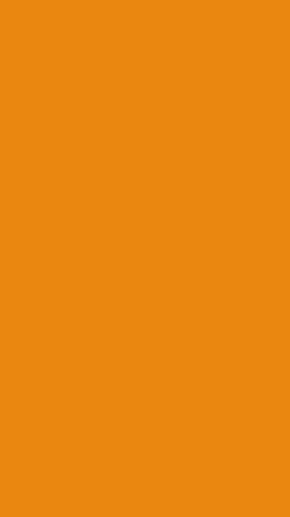

<!--
  Generated template for the SobrePage page.

  See http://ionicframework.com/docs/components/#navigation for more info on
  Ionic pages and navigation.
-->
<style>
  * {box-sizing: border-box}
  body {font-family: Verdana, sans-serif; margin:0}
  .mySlides {display: none}
  img {vertical-align: middle;}
  
  /* Slideshow container */
  .slideshow-container {
    max-width: 1000px;
    position: relative;
    margin: auto;
  }
  
  /* Next & previous buttons */
  .prev, .next {
    cursor: pointer;
    position: absolute;
    top: 50%;
    width: auto;
    padding: 16px;
    margin-top: -22px;
    color: white;
    font-weight: bold;
    font-size: 18px;
    transition: 0.6s ease;
    border-radius: 0 3px 3px 0;
    user-select: none;
  }
  
  /* Position the "next button" to the right */
  .next {
    right: 0;
    border-radius: 3px 0 0 3px;
  }
  
  /* On hover, add a black background color with a little bit see-through */
  .prev:hover, .next:hover {
    background-color: rgba(0,0,0,0.8);
  }
  
  /* Caption text */
  .text {
    color: #f2f2f2;
    font-size: 15px;
    padding: 8px 12px;
    position: absolute;
    bottom: 8px;
    width: 100%;
    text-align: center;
  }
  
  /* Number text (1/3 etc) */
  .numbertext {
    color: #f2f2f2;
    font-size: 12px;
    padding: 8px 12px;
    position: absolute;
    top: 0;
  }
  
  /* The dots/bullets/indicators */
  .dot {
    cursor: pointer;
    height: 15px;
    width: 15px;
    margin: 0 2px;
    background-color: #bbb;
    border-radius: 50%;
    display: inline-block;
    transition: background-color 0.6s ease;
  }
  
  .active, .dot:hover {
    background-color: #717171;
  }
  
  /* Fading animation */
  .fade {
    -webkit-animation-name: fade;
    -webkit-animation-duration: 1.5s;
    animation-name: fade;
    animation-duration: 1.5s;
  }
  
  @-webkit-keyframes fade {
    from {opacity: .4} 
    to {opacity: 1}
  }
  
  @keyframes fade {
    from {opacity: .4} 
    to {opacity: 1}
  }
  
  /* On smaller screens, decrease text size */
  @media only screen and (max-width: 300px) {
    .prev, .next,.text {font-size: 11px}
  }
  </style>
<ion-header>
  <ion-navbar color="primary" hideBackButton>
    <button style="background-color:#303F9F;" (click)="openMenu()">
      <ion-icon name="menu" md="md-menu" style="zoom:2.0; display: inline -block;"></ion-icon>
    </button>
    <ion-title> Sobre a Tech Signal </ion-title>
  </ion-navbar>
</ion-header>

<ion-content>
  <ion-slides page r="true">
    <ion-slide>
      
    </ion-slide>
    <ion-slide>
      
    </ion-slide>
    <ion-slide>
      
    </ion-slide>
  </ion-slides>
    <br>
</ion-content>